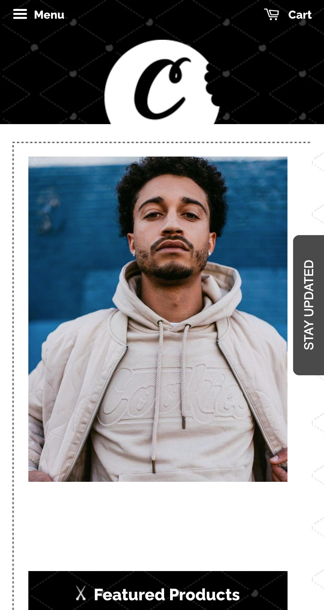

Cookiessf
Cookiessf This picture from the Cookiessf website is a great example of how the Rule of repetition can be uesd not only a photograph but also enhancing the website. note that is the top page , which has a C, and the other C focus, in the man jacket.
Donuts Inc
Donuts IncThe Donuts Inc are used good alignment with all in all paragraphs in the front website, and some contrast with diferent colors too.
Naranga
NarangaNaranga website has a lot of proximity for example header you can see the logo and the paragraph they are close, next in the center we have another paragraph close to more details botton, in footer we have chat botton, and unblock notifications botton.